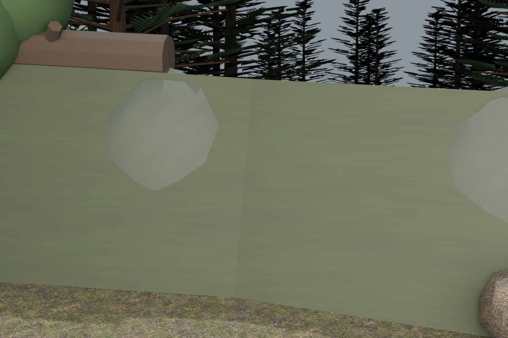
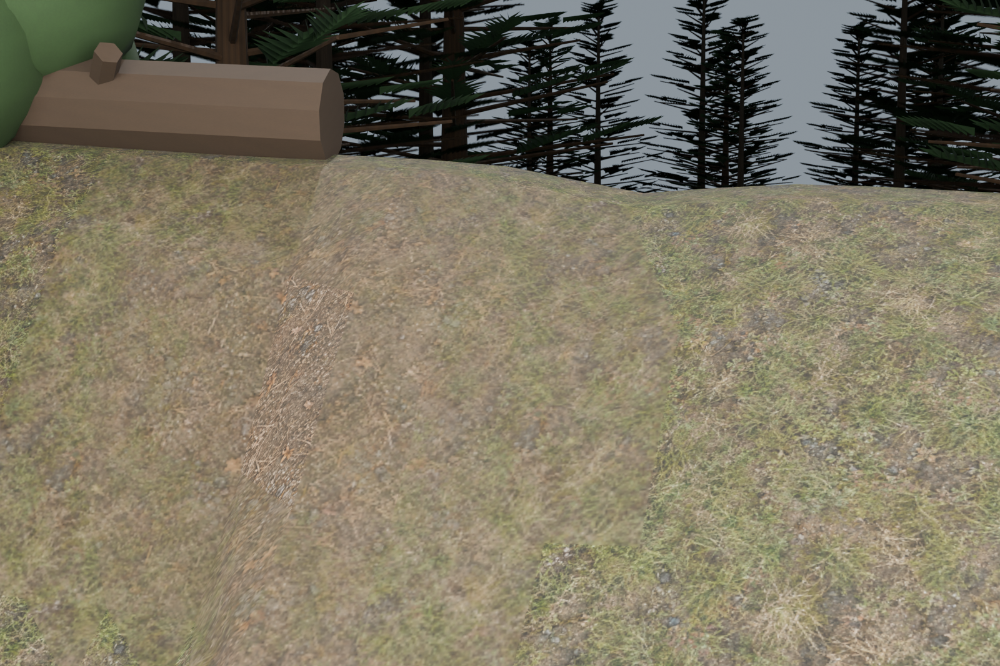
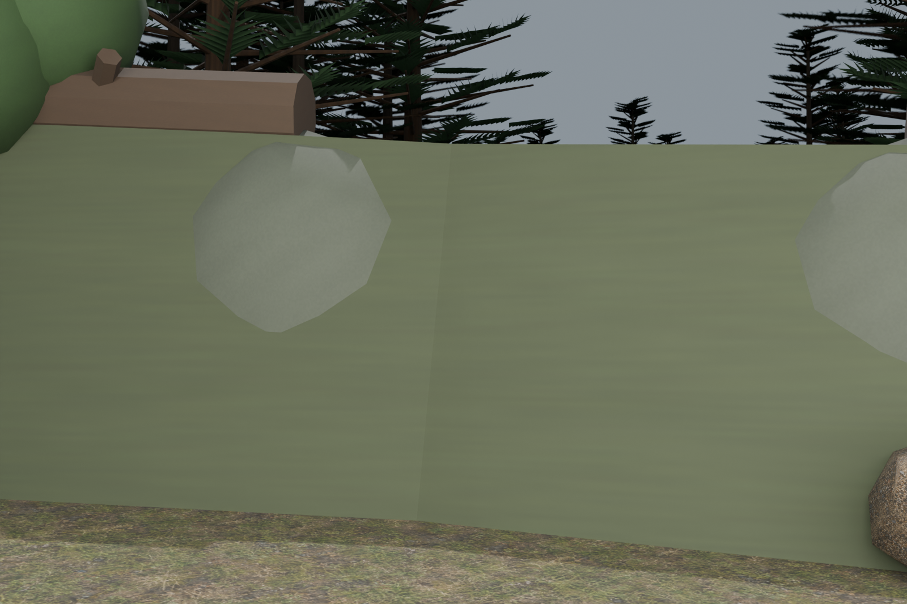
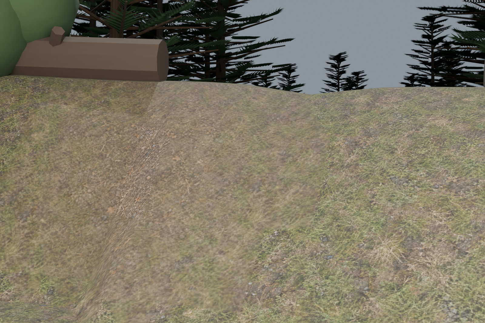
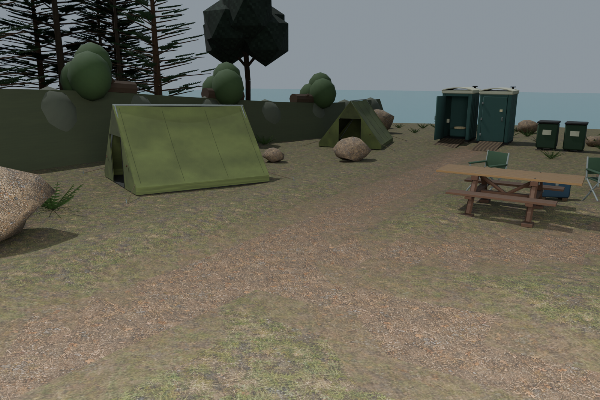
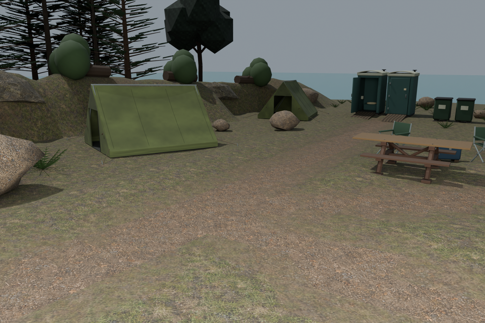
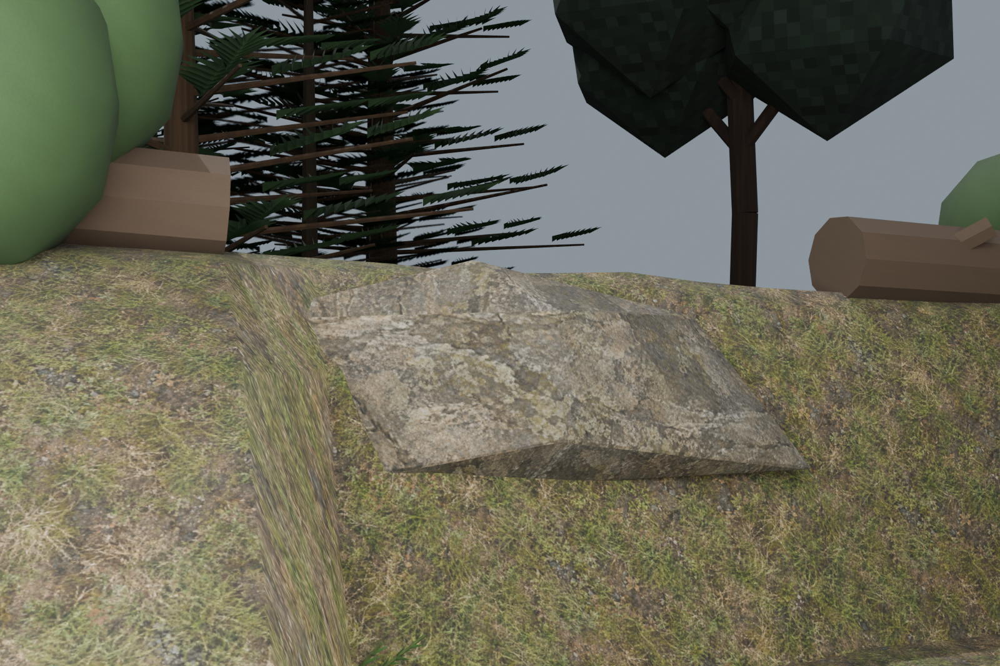
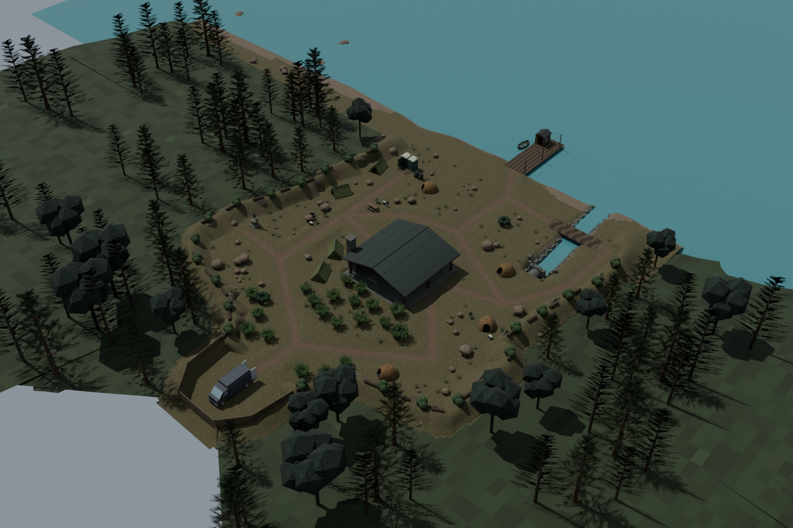

25 October2026 · Native/model refinement checkpoint
The old uniform flat-topped berm and gravel-covered blobs have been replaced. The bank now has a curved plan, rounded shoulders, varying widths and relief, small erosional gullies and worn-soil patches using the campsite material family. Twelve partly buried fractured stone wedges use a new solid-bedrock diffuse.
All views below are native Blender reviews, not running-game captures. Actual map movement/collision, ghost containment, renderer/optical/circuit/host/LAN, water layers and final encounter acceptance remain open. No map is unlocked.








Bank sections span3.37–8.30m total width, constrained around existing facilities and routes. Crest relief varies0.36–2.35m, including lowered fenced service returns. There is no repeated flat crest profile. Closed soil/stone shells,954 actual toe/ground probes,12 partly buried outcrops and389932 actual facility-vertex clearance probes pass.
52 crest assemblies were refitted without stretching:28 logs with both end bearings seated in actual soil, and24 rooted shrubs with attached branches/crowns. Maximum independent rigid-transform error:0.119µm. The other907 meshes retain their exact source geometry, pose, UVs and materials.
The renewed protected-route, ritual, floor, bedding, crouch entry, ramp, native-water-barrier and culvert checks pass on this scene. Two actual game-loader exports pass576 independent UV/PNG pixel checks within unchanged50k-triangle/4MB asset limits; their raw oriented triangles match the current native sources exactly. Existing14 site-art assets/4824 pixel checks also pass. These checks do not prove runtime player containment or performance.
level_camp_boundary_banks_grounded · 15074 triangles · editable source · runtime export
level_camp_boundary_logfall_grounded · 9808 triangles · editable source · runtime export
The original bedrock bitmap and exact built-in image_gen prompt are saved with the project; only a packed512px derivative is used in exports. Continue log/bark/foliage weathering and distant-ground materials, inspect all changes in the actual world renderer, regenerate the stale physics export from this current scene, and implement the remaining gameplay/host/LAN and UV-goose encounter gates before another location.
Bank geometry and rigid crest-placement packet
Independent bank/support/source checks
Actual game asset reader checks
Original generated bedrock source